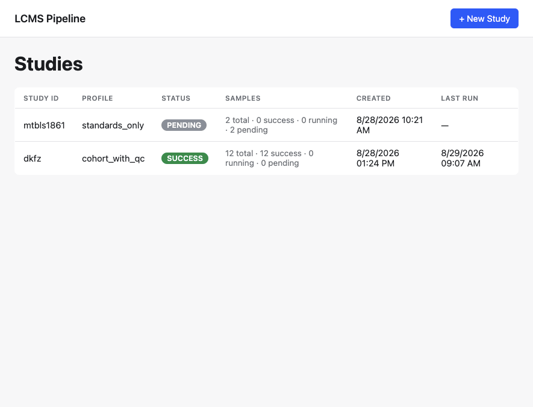
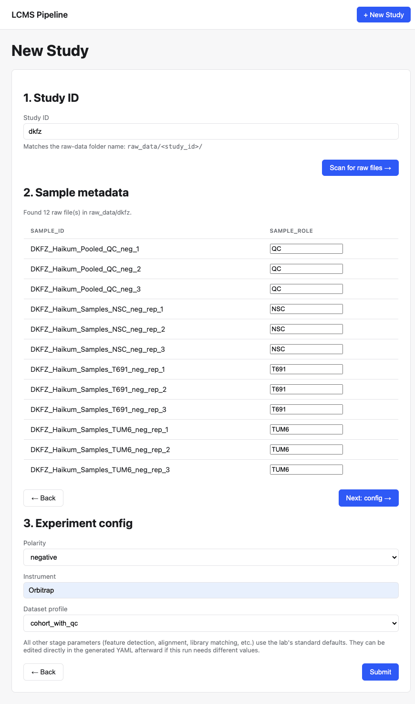
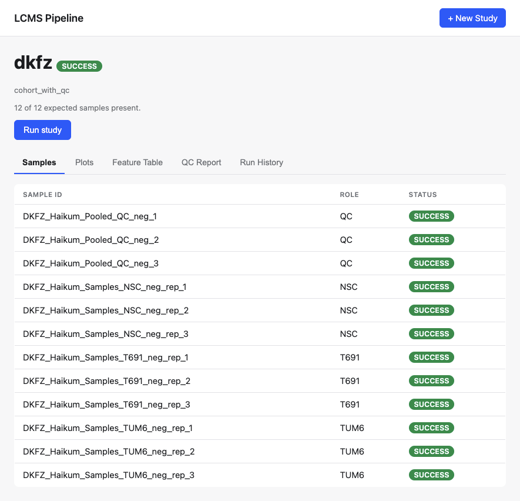
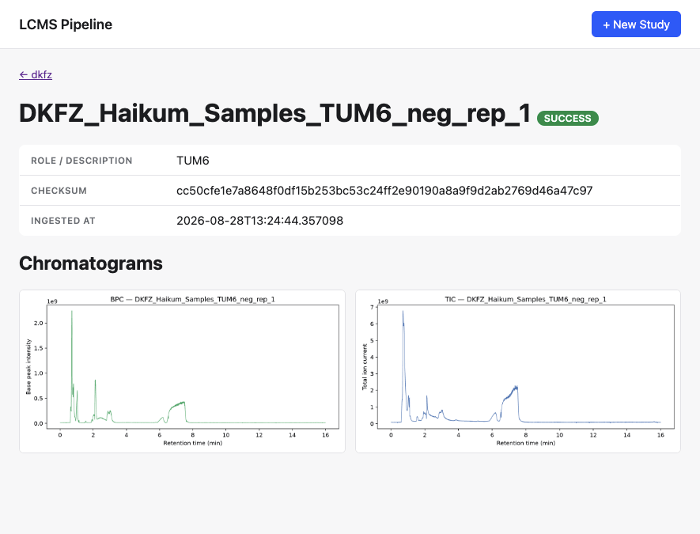

Installation
git clone <repo-url>
cd lcms_api
# dependencies (uv, or plain pip)
uv sync
# -- or --
python3 -m venv .venv && source .venv/bin/activate
pip install -e .
cp .env.example .env # then fill in the paths belowRequired settings in .env (see core/settings.py):
LCMS_RAW_DATA_DIR | Where raw .mzML/.mzXML files and each study's sample-metadata CSV live, one subfolder per study_id. |
|---|---|
LCMS_RESULTS_DIR | Where pipeline output (feature tables, QC reports, plots) is written, one subfolder per study_id. |
YAML_DIR | Where each study's experiment config YAML is written/read. |
LCMS_DB_PATH | SQLite file backing the Experiment/Sample/Pipeline tables. |
LCMS_REFERENCE_LIBRARY_DIR | Reference compound library used by standards_only matching. |
Then start the web app:
uvicorn api.main:app --reloadThe dashboard is at http://localhost:8000/. Tables are created automatically on first startup (create_db_and_tables), no separate migration step needed.
Getting Started
There are two ways to set up and run a study — pick whichever fits how you work. Everything below produces the exact same result: a validated experiment config YAML, a sample-metadata CSV, and an Experiment row ready to run.
The recommended path, especially for anyone not comfortable hand-editing YAML. Drop your raw files, then walk through the wizard:
- Copy the study's
.mzML/.mzXMLfiles into<LCMS_RAW_DATA_DIR>/<study_id>/. - On the dashboard, click + New Study.
- Study ID — type the same
study_idyou used for the folder above and scan for raw files. - Sample metadata — the wizard pre-fills
sample_idfor every file it found; fill insample_role(e.g.QC, or a treatment group) for each row. - Config — pick polarity, instrument, and dataset profile. Everything else (feature detection thresholds, alignment tolerance, QC thresholds, etc.) is pre-filled from the lab's standard defaults in
config/experiments/template.yaml— edit the generated YAML by hand afterward only if this run needs different values. - Submit. The wizard validates the config, checks every declared sample has a matching raw file, and only then creates the study.
See Using the Web App below for what happens after the study exists.
For scripting, or working directly on the filesystem without the browser in the loop.
- Drop raw files into
<LCMS_RAW_DATA_DIR>/<study_id>/, same as above. - Write
<study_id>_sample_metadata.csvinto that same folder — one row per sample, at minimum asample_idcolumn matching each raw file's stem, plussample_role. - Copy
config/experiments/template.yamlto<YAML_DIR>/<study_id>.yamland fill instudy.id,study.polarity,study.instrument,dataset_profile, andfiles.sample_metadata. - Create the
Experimentrow and run, either via the API (see API Reference) or directly in Python:
from src.pipeline_orchestrator import run_pipeline_for_study
context = run_pipeline_for_study("your_study_id")TODO: a real standalone CLI entrypoint (argparse/click) doesn't exist yet — today "CLI" means writing the files by hand and either hitting POST /studies or calling run_pipeline_for_study directly from a Python shell/script.
Using the Web App

One row per study — profile, status, and a live sample-status breakdown. Auto-refreshes while any study is running.

The three-step wizard — scan raw files, fill sample metadata, confirm config — covered in Getting Started.

Samples, cohort-wide plots, feature table preview, QC report, and run history for one study.

One sample's own TIC/BPC chromatograms, role, checksum, and ingestion time.
Dashboard
One row per study: profile, status, a live sample-status breakdown (pending / running / success / failed), created/last-run timestamps. Auto-refreshes while any study is running. Click a row to open its study page.
New Study wizard
The three-step flow covered in Getting Started — scan raw files, fill sample metadata, confirm config.
Study detail — Samples
Every ingested sample with its role and status. A readiness banner up top shows how many of the declared samples actually have a raw file present. Click a sample to see its own chromatograms.
Study detail — Plots
Cohort-wide plots grouped into sub-tabs (chromatograms, summary stats, volcano, heatmap/clustering, PLS-DA, XIC) — whichever categories the run actually produced. Click any plot to open it full-size.
Study detail — Feature Table
A preview of the first ~20 rows of the feature table (cohort mode) or library (standards_only), with a link to download the full CSV.
Study detail — QC Report / Run History
The raw qc_report.json for the study, and a list of every pipeline run with per-run status and step count.
Run button
Always re-runs the full dataset-profile batch (cohort-wide stages like alignment and stats aren't per-sample, so there's no partial/incremental re-run). Status updates propagate back to the dashboard and the sample table automatically.
Sample detail page
One sample's own TIC/BPC chromatograms plus its role, checksum, and ingestion time — separate from the study-wide cohort plots.
Configuration
The pipeline runs in one of two dataset_profile modes:
| standards_only | cohort_with_qc | |
|---|---|---|
| Use case | Single-standard runs, known reference compounds | Full multi-sample biological cohorts |
| Status | Complete · tested | Validated on real data (MTBLS1301) |
The profile is a field in the study's config YAML (dataset_profile:) — set via the Config step of the intake wizard, or by hand if working from the CLI/Manual path in Getting Started. Every other stage parameter (feature detection thresholds, alignment tolerance, blank/QC thresholds, etc.) has a lab-standard default in config/experiments/template.yaml; override any of them per-study by editing the generated YAML directly.
API Reference
The web app's HTML pages and the REST API below share the same underlying logic — anything the wizard/dashboard/study pages can do, these endpoints can do too. Useful for scripting against a running instance instead of clicking through the browser.
Studies
GET /studies | Dashboard summary — one entry per study with sample-status counts. |
GET /studies/config-defaults | The lab-standard config template used to pre-fill new studies. |
GET /studies/{study_id}/raw-files | Scans the raw-data folder for a study_id and returns candidate sample_ids. Works before the study exists. |
POST /studies | Creates a study: validates config, checks every sample has a raw file, writes the YAML+CSV, creates the Experiment row, ingests samples. Body: {"config": {...}, "sample_rows": [...]}. |
GET /studies/{study_id}/sample-readiness | Diffs declared samples against what's actually present on disk. |
Samples
POST /studies/{study_id}/ingest-samples | Re-runs ingestion from the study's sample-metadata CSV. |
GET /studies/{study_id}/samples | Lists every ingested sample with role/status/checksum. |
Runs
POST /studies/{study_id}/run | Kicks off a full pipeline run as a background task. Returns a run_id immediately. |
GET /studies/{study_id}/status | The study's current overall status. |
GET /studies/{study_id}/runs/{run_id} | Per-stage status/timing/error detail for one run. |
Results
GET /studies/{study_id}/results/qc-report | The full QC report JSON for the study. |
GET /studies/{study_id}/results/table/preview | First ~20 rows of the feature table / library, plus total row count. |
GET /studies/{study_id}/results/table.csv | Full feature table / library download. |
GET /studies/{study_id}/results/plots | Every plot the run produced, grouped by category. |
GET /studies/{study_id}/results/plots/{category}/{filename} | One plot PNG. |
GET /studies/{study_id}/results/runs | Run history: one summary row per run_id. |
Examples
# kick off a run and poll it
curl -X POST http://localhost:8000/studies/dkfz/run
curl http://localhost:8000/studies/dkfz/runs/<run_id>
# pull the QC report once a run finishes
curl http://localhost:8000/studies/dkfz/results/qc-report | jqStage Contract
Every pipeline stage implements the same three-method contract:
validate_input(context) | Raises FatalStageError if a required upstream stage hasn't run or required context data is missing. Returns True otherwise. |
|---|---|
execute(context) | Does the stage's work, updates context.qc_metrics[stage_name], calls context.log_step(...), returns the (mutated) context. |
validate_output(context) | Sanity-checks that execute actually produced its expected output. Returns a bool. |
TODO: full public class/method reference (LCMSContext full field list, Sample/Experiment DB models beyond what's in API Reference).